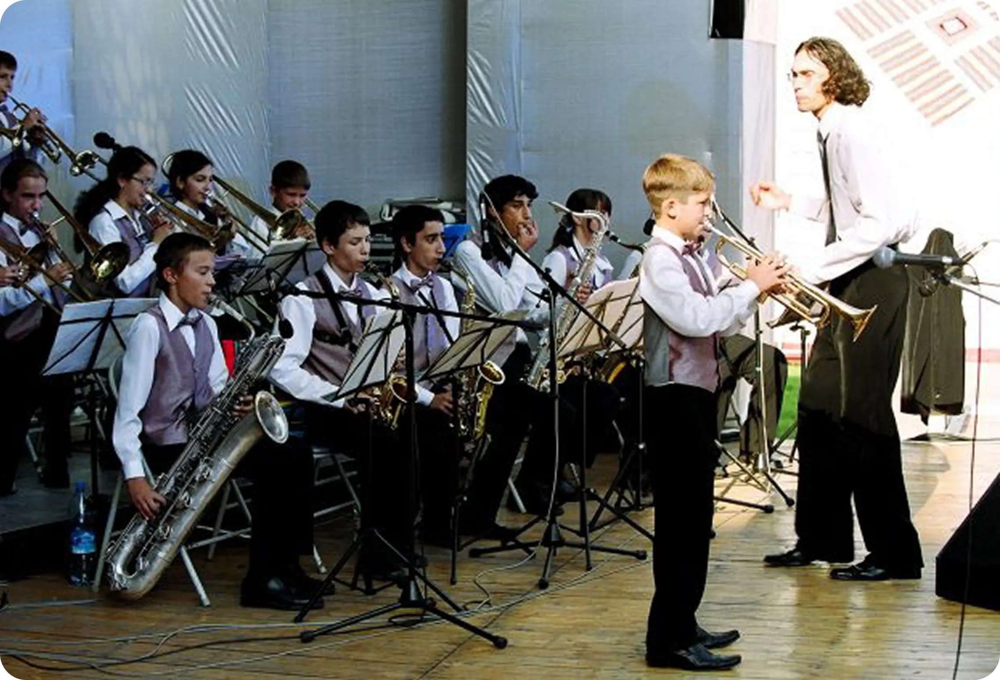
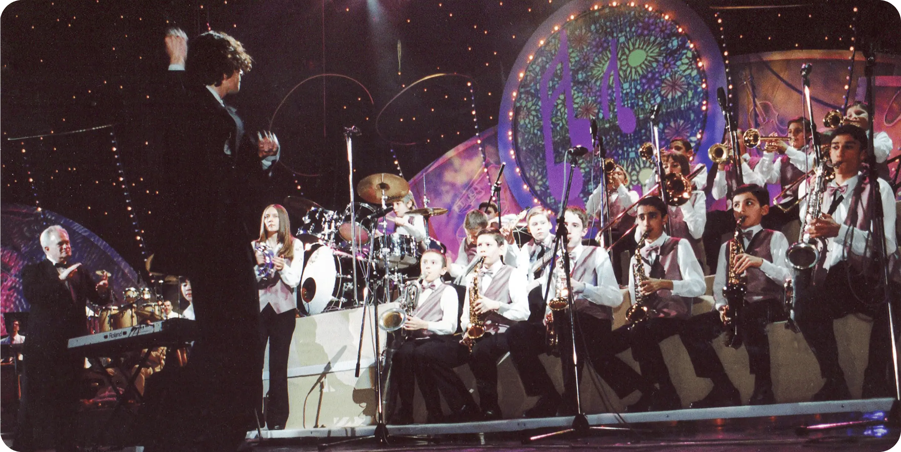
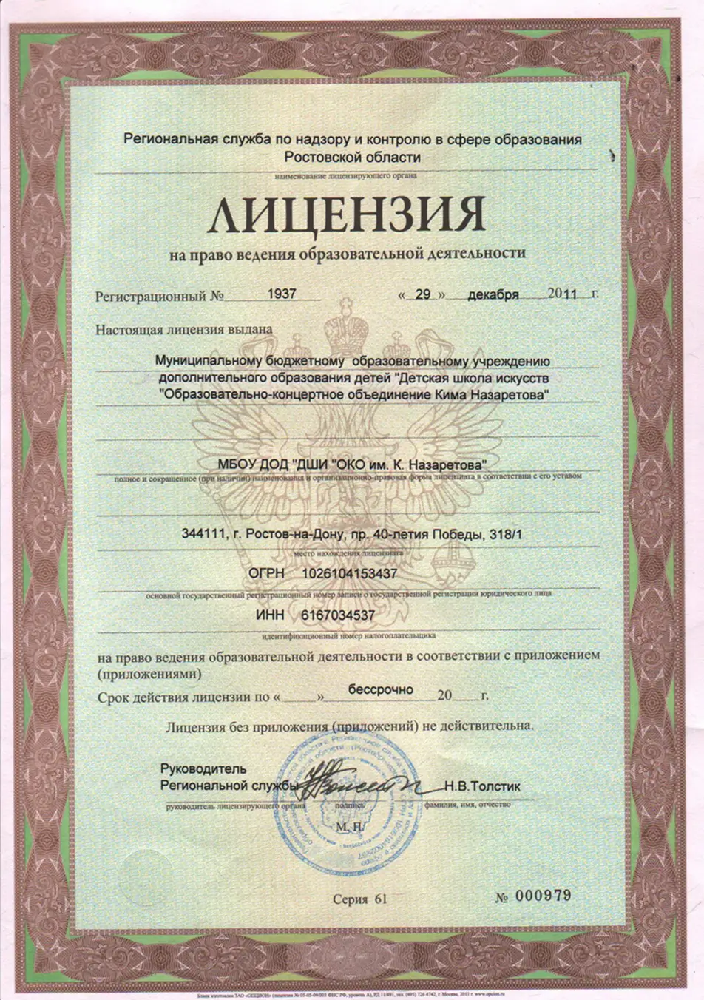
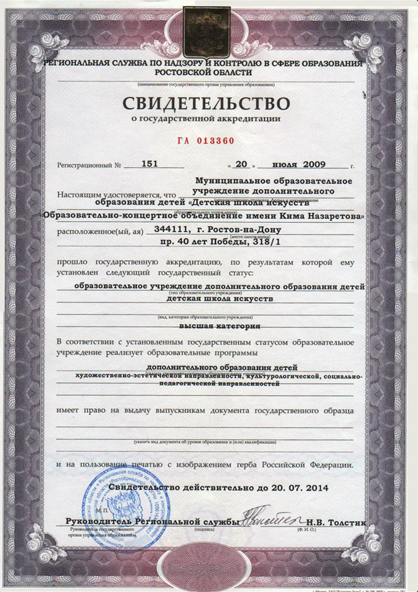

О школе
Вот уже 15 лет двери детской джазовой школы им. Кима Назаретова открыты для вундеркиндов, талантливых и просто способных к занятиям музыкой детей.
Школа уникальна тем, что является единственной в стране детской джазовой школой с 10-летним сроком обучения. Педагогическое кредо школы — ориентация на развитие личности и свободу мышления учащихся. Сочетание отечественных педагогических традиций с нестандартными учебными программами и современными обучающими технологиями дают ошеломляющий результат: выступления учеников школы на фестивалях, конкурсах, концертах поражают недетским мастерством и зрелостью исполнения. Выпускники школы продолжают обучение в консерваториях Ростова, Амстердама, Гронингена, Берлина, Лейпцига, Денвера, Лиссабона и Лиона.
В школе ведётся обучение по специальностям джазового оркестра: фортепиано, саксофон, труба, тромбон, ударные инструменты, гитара, бас-гитара, вокал. Курс «Эстетика» включает в себя: хореографию, живопись, актёрское мастерство, этику. Кроме этого детям предлагаются такие предметы как: «Оркестр», «Импровизация», «Английский язык». Из «Сольфеджио» вынесен специальный курс — «Ритмика». Со 2 класса дети изучают «Историю музыки», а с 6 класса — «Историю джаза». В связи с переходом на 10-летнее обучение, с 2003 года введены предметы из курса эстрадно-джазовых отделений музыкальных училищ — «Композиция» и «Аранжировка». Авторские программы, разработанные педагогами школы, имеют одну общую особенность — высокий развивающий потенциал и возможность использования разноуровнего обучения.


В уникальной школе учатся уникальные дети, для которых импровизация за инструментом или сочинение музыки так же естественны, как дыхание. 10-летний Витя Кузнецов, слепой от рождения, смело импровизирует в жанре этнической музыки: русской, китайской, арабской, хотя этому его ещё никто не учил. 9-летняя Сонечка Стативка сочинила блюз, с которым успешно выступила в концерте.
Способность «схватывать» особенности стилей, жанров, форм и манеры исполненияиз самой музыки — это признаки незаурядных музыкальных задатков. За тем, как сложится творческая судьба талантливых детей, внимательно следят опытные педагоги. Среди них — ученики и ученики учеников первого в стране профессора джаза Кима Назаретова, чьё имя носит школа. Яркий исполнительский талант Арама Рустамянца, Андрея Мачнева, Григория Дерацуева и Виталия Петрова несомненно передаётся их талантливым ученикам.
Визитной карточкой школы стал детский биг-бэнд под управлением Андрея Мачнева. Оркестр много концертирует в России, за рубежом, при этом, успевая ежегодно обновлять состав, менять репертуар и совершенствовать исполнение. В школе обучаются и малыши, которые продемонстрировали на вступительных экзаменах незаурядные музыкальные способности. Самой маленькой ученице - Весении Дерацуевой - было всего 2 года и 9 месяцев, когда она приступила к занятиям в школе! В работе с маленькими музыкантами есть своя специфика: наряду с уроками сольфеджио и фортепиано, педагоги занимаются с ними ритмикой, английским языком и предметами эстетического цикла. И всё это – в игровой форме, превращая образовательный процесс в увлекательное путешествие по бескрайнему миру музыки.
Школа является первым звеном уникальной инфраструктуры музыкального образования (школа — училище — консерватория — аспирантура — концертный центр) и принимает участие (около 100 концертов в год) практически в каждом мероприятии сложившегося джазового сообщества.

